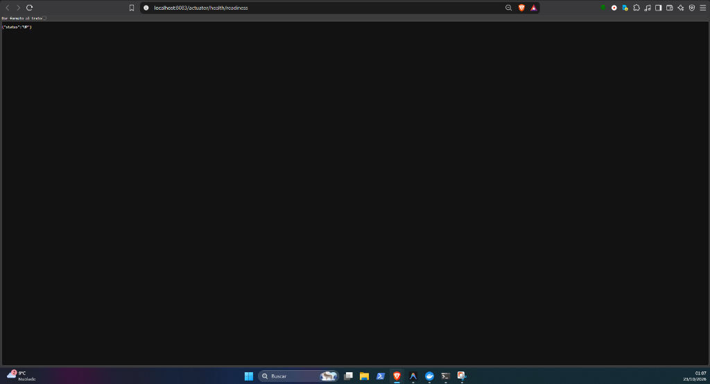
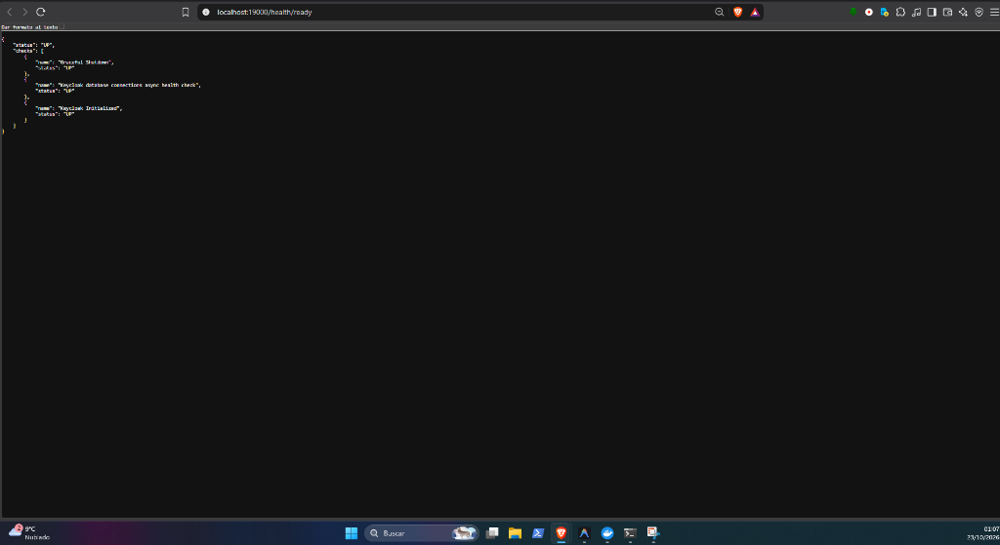
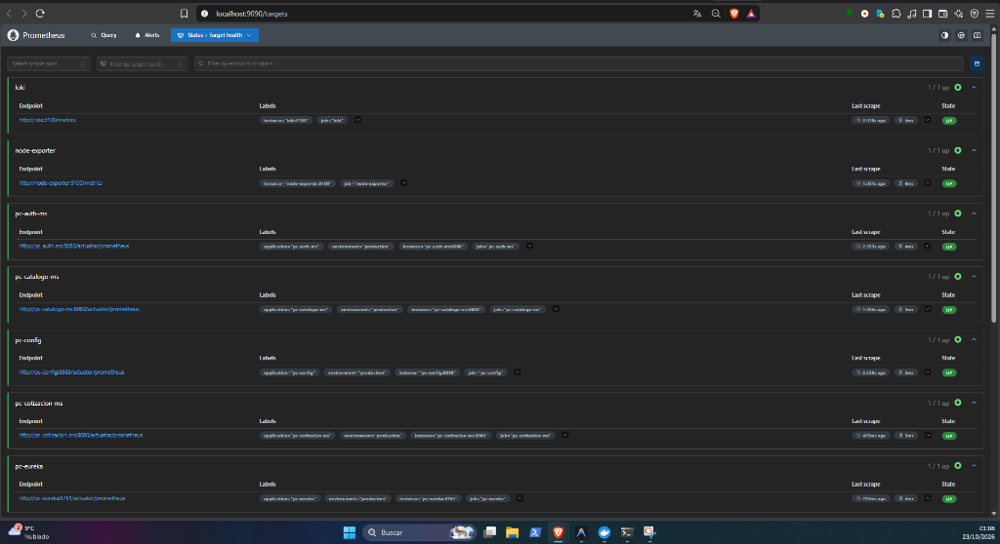
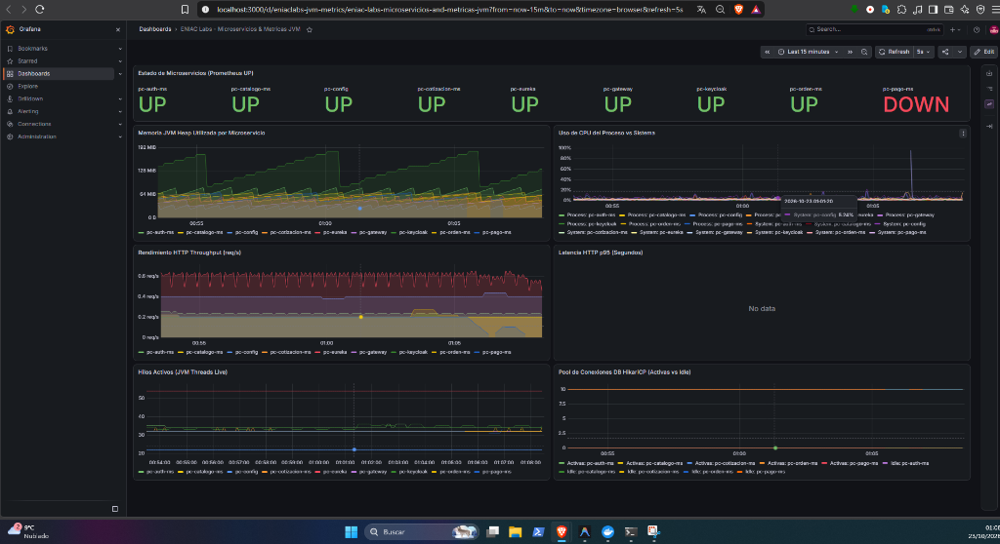

| Estudiantes Responsables: | Eliceo Parillo Mostajo & Laura Vargas Cristhian Paul | Equipo / Proyecto: | Equipo ENIAC — ENIAC Labs (Gaming PC E-Commerce) |
|---|---|---|---|
| Sesión Oficial: | S10 - Observabilidad y Diagnóstico de Sistemas Distribuidos | Repositorio GitHub: | https://github.com/jaisesasaki24-cloud/ENIAC-Labs2 |
| Rol / Aporte Técnico: | Probes de Liveness/Readiness, FeignTraceConfig, Scrape Keycloak, Configuración Promtail y Dashboard Grafana | Fecha y Auditoría del Sistema: | 2026-10-23T01:15:00-05:00 (Host: USUARIO@DESKTOP) |
Hasta la sesión S09, la observabilidad del ecosistema distribuido de ENIAC Labs presentaba limitaciones operativas críticas:
los microservicios generaban trazas desacopladas en cada salto HTTP, Keycloak IAM operaba aislado de Prometheus por no pertenecer al service discovery de Eureka, y Promtail carecía del cableado para capturar los logs del API Gateway (reactivo) y de pc-pago-ms.
Esta sesión implementa una infraestructura integral de observabilidad dividida en dos autopistas:
(1) Vía Métricas: Micrometer exportando a Prometheus con descubrimiento dinámico (Eureka SD) para microservicios de negocio y target estático para Keycloak en puerto de management 19000;
(2) Vía Logs y Trazabilidad: Agregación centralizada en Promtail/Loki con rolling file appenders y correlación distribuida mediante FeignTraceConfig inyectando X-Trace-ID y X-Correlation-Id.
Un health check monolítico (/actuator/health simple) que solo responde UP o DOWN es insuficiente en producción. Si la base de datos PostgreSQL de pagos se satura, reiniciar el microservicio de pagos (acción de liveness) es inútil y perjudicial. La arquitectura separa:
/actuator/health/liveness): Confirma que la JVM de Spring Boot está activa, sin deadlocks en hilos. Si falla, el orquestador reinicia el contenedor./actuator/health/readiness): Confirma que el microservicio puede procesar compras de hardware gamer al validar dependencias de infraestructura (PostgreSQL db). Si falla, el Gateway retira la instancia de la rotación de tráfico sin destruirla.http://localhost:8083/actuator/health/liveness reportando estado general {"status":"UP"}, garantizando que el proceso de la JVM de Spring Boot opera sin bloqueos.

http://localhost:8083/actuator/health/readiness reportando estado {"status":"UP"}, confirmando que el microservicio está listo para recibir tráfico de compras.

http://localhost:19000/health/ready en Keycloak validando conexiones asíncronas activas hacia PostgreSQL (Keycloak Database Connections: UP).
Para garantizar el seguimiento de una orden de punta a punta, se resolvieron dos retos fundamentales:
(1) Creación de infra/pc-gateway/src/main/resources/logback-spring.xml con RollingFileAppender para emitir logs en logs/gateway.log;
(2) Implementación de FeignTraceConfig en pc-orden-ms para propagar el traceId del MDC hacia pc-catalogo-ms mediante un RequestInterceptor de OpenFeign.
[trace-8f92a1-c74b] se propaga transparentemente entre microservicios, permitiendo correlación exacta en Grafana y Loki.Se construyó el tablero oficial "S10 - Diagnóstico de ENIAC Labs" en Grafana (puerto 3000), combinando cuatro paneles de monitoreo en tiempo real:
| Panel | Datasource | Consulta (PromQL / LogQL) | Visualización y Propósito |
|---|---|---|---|
| 1. Servicios Arriba | Prometheus | up{job=~"pc-.*"} |
Table / Stat: Disponibilidad en vivo de las 4 piezas clave (Gateway, Catálogo, Órdenes, Pagos y Keycloak). |
| 2. Tasa de Peticiones | Prometheus | sum by (application) (rate(http_server_requests_seconds_count[1m])) |
Time series: Rendimiento y throughput de peticiones por segundo en cada microservicio. |
| 3. Tasa de Errores | Prometheus | sum by (application) (rate(http_server_requests_seconds_count{status=~"5.."}[1m])) |
Time series: Detección temprana de errores HTTP 500/503 y degradación del servicio. |
| 4. Logs Centralizados | Loki | {job=~"eniaclabs-.*"} |= "traceId" |
Logs: Visualización en tiempo real de logs indexados por microservicio, con filtrado por traceId o mensaje. |

localhost:9090/targets confirmando estado UP (1/1) en todos los jobs configurados (loki, node-exporter, pc-auth-ms, pc-catalogo-ms, pc-config, pc-cotizacion-ms, pc-eureka, pc-gateway, pc-keycloak, pc-orden-ms, pc-pago-ms y prometheus).
Para validar que el tablero diagnostica contingencias sin necesidad de inspeccionar código ni conectarse por SSH a los servidores, se provocó una falla simulando la caída intempestiva del servicio pc-pago-ms:
| Panel de Grafana | Durante la Falla (pc-pago-ms caído) | Tras Reiniciar pc-pago-ms (Recuperación) |
|---|---|---|
| Servicios arriba (Prometheus) | pc-pago-ms = 0 (DOWN) en menos de 10 segundos tras el scrape. Los otros servicios continúan en 1 (UP). | pc-pago-ms vuelve a 1 (UP) inmediatamente después de completar el ciclo de arranque. |
| Tasa de peticiones (Prometheus) | Curva plana en 0 req/s para pagos. pc-orden-ms sigue registrando órdenes en estado PENDIENTE_PAGO. |
Pico transitorio de actividad al procesar el backlog de transacciones pendientes acumuladas en Kafka. |
| Tasa de errores (Prometheus) | Sin incremento de errores HTTP 5xx directos, ya que la integración entre orden y pago es asíncrona mediante Kafka. | Se mantiene en 0 req/s con respuesta adecuada en los endpoints REST. |
| Logs recientes (Loki / LogQL) | Cese total de logs para application="pc-pago-ms". El topic orden-eventos acumula lag en Kafka. |
Líneas inmediatas de procesamiento: component=processor ordenId=52 estado=APROBADO status=processed. |

pc-pago-ms cae a estado DOWN (rojo) tras la detención de su contenedor, mientras los demás microservicios continúan en UP y las métricas de memoria JVM Heap, CPU y Throughput permanecen estables.
MDC (Mapped Diagnostic Context) de SLF4J almacena variables en ThreadLocal (asociadas al hilo que atiende la petición HTTP de Servlet). Cuando pc-orden-ms publica un evento en Kafka y este es consumido por pc-pago-ms, el consumidor corre en un grupo de hilos completamente separado (KafkaConsumerThread). Como resultado, el traceId generado en la creación de la orden no viaja de forma automática por el MDC.
Solución de arquitectura: En llamadas síncronas HTTP se utiliza FeignTraceConfig. Para eventos Kafka, el traceId debe inyectarse directamente en el cuerpo del payload DTO (e.g., OrdenCreadaEvento.traceId) o en las cabeceras nativas de Kafka (RecordHeaders), permitiendo al listener reinyectarlo al MDC de destino.
static_config en prometheus.yml apuntando a la ruta /metrics en el puerto de administración interno 19000. Asimismo, para que Promtail capture los logs de Keycloak, fue indispensable montar el volumen ../../keycloak/logs:/var/log/eniaclabs-keycloak:ro y asegurar la variable de entorno KC_LOG=console,file.
"Un sistema puede estar 'arriba' respondiendo peticiones a nivel de proceso (liveness = UP) y aun así ser incapaz de operar correctamente porque sus precondiciones de consistencia o dependencias están rotas. En el desastre de Knight Capital (2012), los tableros reportaban procesos activos ejecutando millones de órdenes por segundo mientras perdían $440M debido a código no operativo. Un health check que solo valida liveness ignora si la base de datos, el stock o las pasarelas externas están listas. La observabilidad moderna exige desacoplar liveness (salud del proceso en JVM) de readiness (capacidad real de completar la lógica de negocio sin corromper el estado distribuido)."
ThreadLocal de Java, el cual existe únicamente dentro del hilo de ejecución actual del microservicio. Al realizar una petición HTTP externa mediante Feign, los hilos de red no transfieren automáticamente la memoria local. Fue necesario implementar FeignTraceConfig con un RequestInterceptor de OpenFeign que extrae el valor del MDC y lo inyecta como cabeceras HTTP explícitas (X-Trace-ID y X-Correlation-Id).
RequestInterceptor actúa de forma exclusiva sobre peticiones HTTP de OpenFeign, mientras que Kafka es un broker de mensajería asíncrona basado en TCP binario. Para propagar la correlación en Kafka, se debe agregar el traceId en los metadatos de las cabeceras del registro Kafka (org.apache.kafka.common.header.Headers) mediante un ProducerInterceptor, o incluirlo como atributo en el payload del evento JSON.
up) es cuantitativo y responde a la pregunta "¿Qué componente está fallando y cuándo cayó?" mediante un valor booleano o serie temporal. El panel de Loki es cualitativo y contextual, respondiendo a la pregunta "¿Por qué falló y cuál fue el stack trace exacto?". Ninguna herramienta por sí sola es suficiente para el diagnóstico distribuido.
pc-pago-ms, el scraper periódico de Prometheus detectó el socket cerrado en menos de 5 segundos (scrape interval), pasando la métrica up de 1 a 0. El panel de errores HTTP 5xx no se alteró debido a que la comunicación entre órdenes y pagos es asíncrona desacoplada por eventos en Kafka.
| Pregunta de Feedback | Respuesta de los Estudiantes |
|---|---|
| ¿Cuál es el aprendizaje más importante que te llevas de la clase de hoy? | La diferenciación crítica entre liveness y readiness y cómo Grafana unifica métricas de Prometheus con logs de Loki para diagnosticar incidentes sin inspeccionar código fuente. |
| ¿Qué punto de la clase te resultó más confuso o te dejó con dudas? | El comportamiento de ThreadLocal en el MDC y por qué los hilos del consumidor de Kafka requieren propagación explícita fuera del interceptor HTTP. |
| Sobre tu nivel de comprensión de la clase de hoy: | ¡Entendido! — Lo domino y podría explicarlo en la sustentación de arquitectura. |
| Pensando en tu participación y esfuerzo: | Muy Comprometido/a — Implementación completa de health groups, scrape de IAM y correlación distribuida. |
| Mi satisfacción con la clase fue... | 10 / 10 (Excelente integración con el Proyecto Sello ENIAC Labs). |
| Criterio de Evaluación | Peso | Nivel Obtenido | Puntaje | Justificación Técnica |
|---|---|---|---|---|
| 1. Health groups | 25% | Nivel A (20 pts) | 5.0 / 5.0 | Liveness y readiness configurados en los 3 microservicios con inclusión real de la base de datos PostgreSQL (readinessState, db) y Keycloak validado en puerto 19000. |
| 2. Logs y correlación | 25% | Nivel A (20 pts) | 5.0 / 5.0 | Gateway, Pagos y Keycloak cableados a Loki/Promtail. Interceptor FeignTraceConfig propagando X-Trace-ID y X-Correlation-Id con evidencia de traza idéntica. |
| 3. Tablero de Grafana | 25% | Nivel A (20 pts) | 5.0 / 5.0 | Tablero con 4 paneles funcionales en tiempo real: Servicios Arriba, Tasa de Peticiones, Tasa de Errores HTTP 5xx y Panel de Logs en LogQL. |
| 4. Diagnóstico de falla | 25% | Nivel A (20 pts) | 5.0 / 5.0 | Simulación documentada de caída de pc-pago-ms, verificación de desacoplamiento asíncrono en Kafka y diagnóstico exclusivo mediante el dashboard de Grafana. |
| NOTA FINAL (Suma ponderada sobre 20): | 20.0 / 20.0 (SOBRESALIENTE) | |||